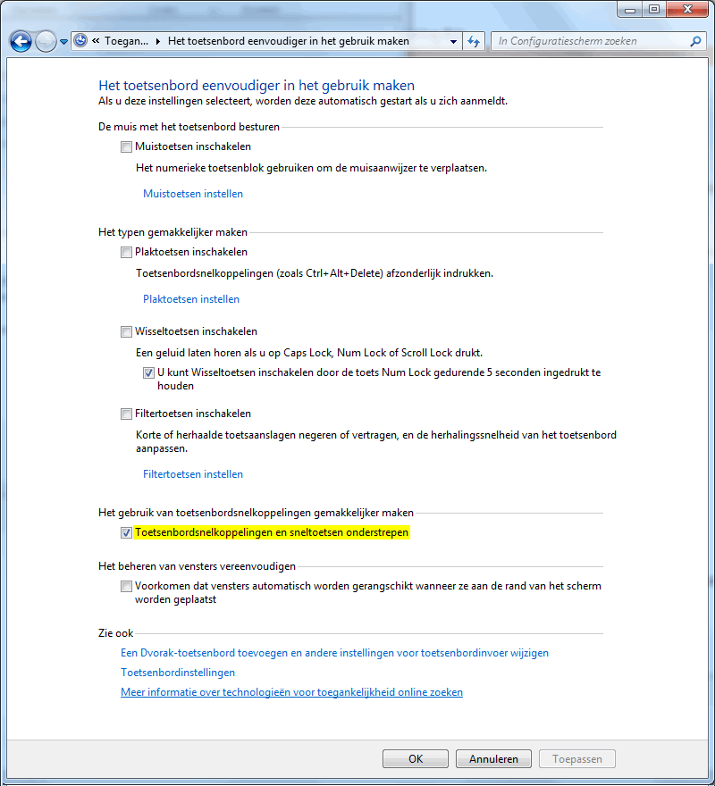

Toegankelijkheidsinstelling aanzetten in Windows 7
-
Klik met de rechtermuisknop, links onderin, op de Windows Start knop.
-
Klik achtereenvolgens op Configuratiescherm > Toegankelijkheid > Toegankelijkheidscentrum > Het toetsenbord eenvoudiger in het gebruik maken.
-
Vink bij 'Toetsenbordsnelkoppelingen en sneltoetsen' onderstrepen aan.

-
Klik op OK.
De sneltoetsen zijn onderstreept.